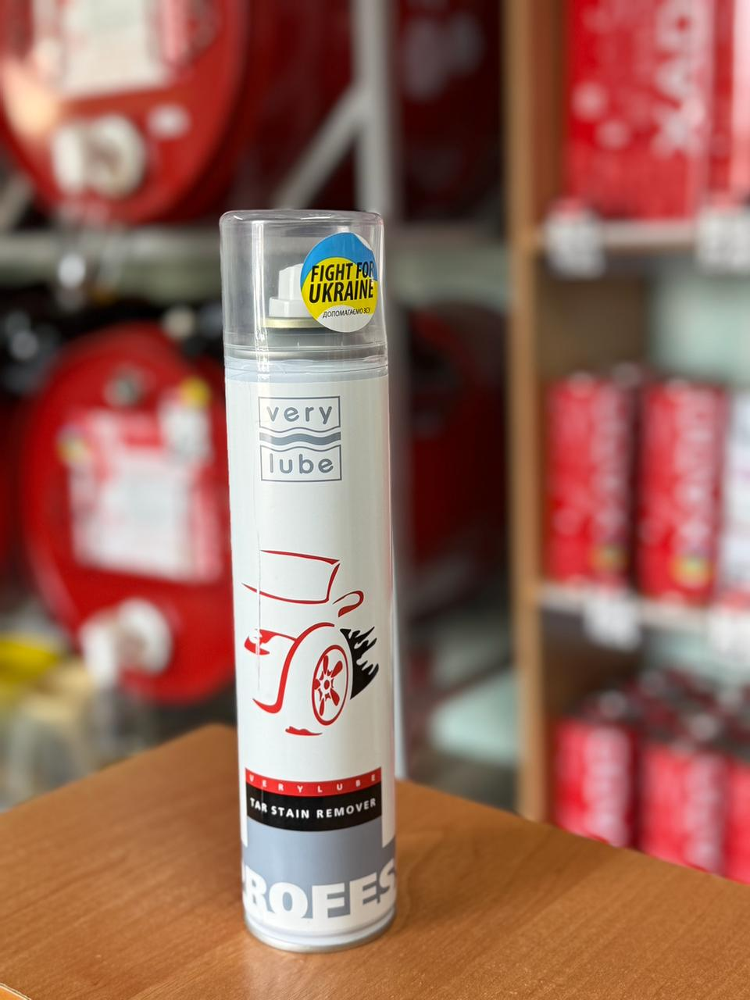

Засіб для видалення бітумних плям АНТИБІТУМ VERYLUBE 300 мл
Ціна: 180 грн
Об’єм: 300 мл
Спеціалізований очисник VERYLUBE, розроблений для швидкого та делікатного усунення складних дорожніх забруднень. Він ефективно розчиняє плями від асфальту, смоли та бітуму на кузові авто, не пошкоджуючи при цьому лакофарбовий шар, металеві, скляні чи хромовані деталі.
- Легко справляється із залишками бітуму на склі, металі, хромі та фарбованих поверхнях.
- Якісно змиває стійкі сліди від мастил, сажі та нальоту вихлопних газів.
- Чудово підходить як допоміжний засіб для зняття застарілих антигравійних плівок та антикорозійних мастик.
- Має абсолютно безпечний склад для всіх типів автомобільних лаків та фарб.
Інструкція із застосування
- Перед використанням ретельно збовтайте балон.
- Розпиліть засіб безпосередньо на ділянку із забрудненням.
- Зачекайте буквально 5–10 секунд, щоб розчинник подіяв.
- Акуратно зітріть бруд м'якою губкою або змийте щільним струменем води.
Важливі застереження
- Категорично заборонено використовувати цей засіб для очищення шкіряних виробів та салону.
- Будьте обережні: уникайте потрапляння спрею на державні номерні знаки та нефарбовані пластикові деталі екстер'єру. Якщо це випадково сталося — негайно промийте ділянку великою кількістю чистої води!
← Назад до каталогу